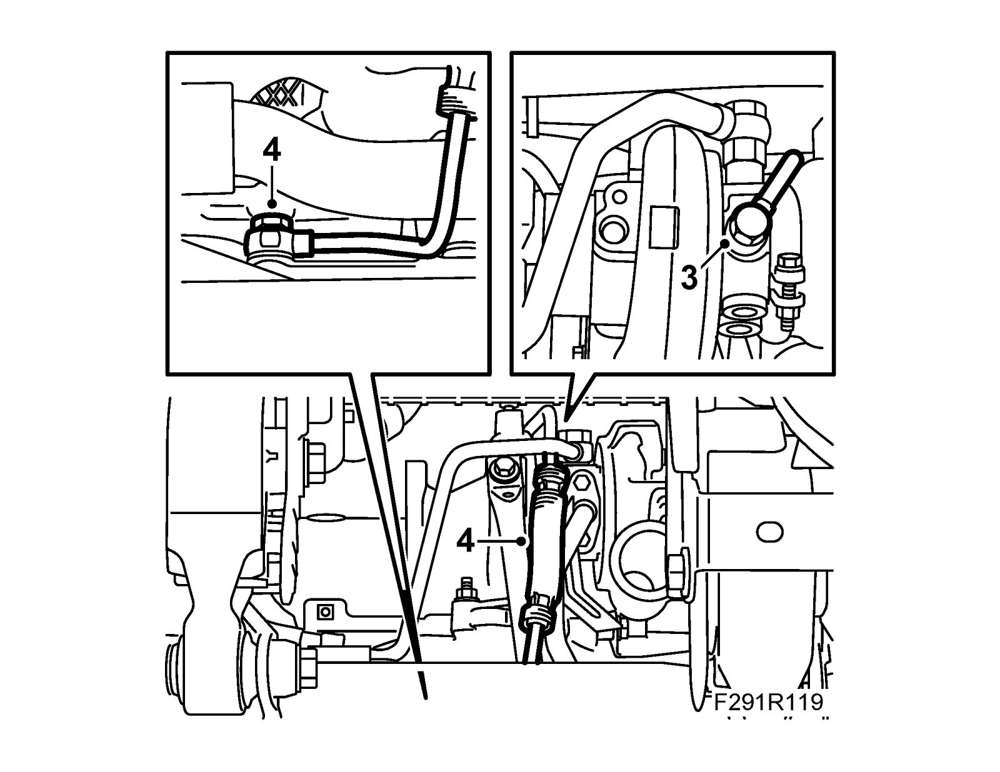
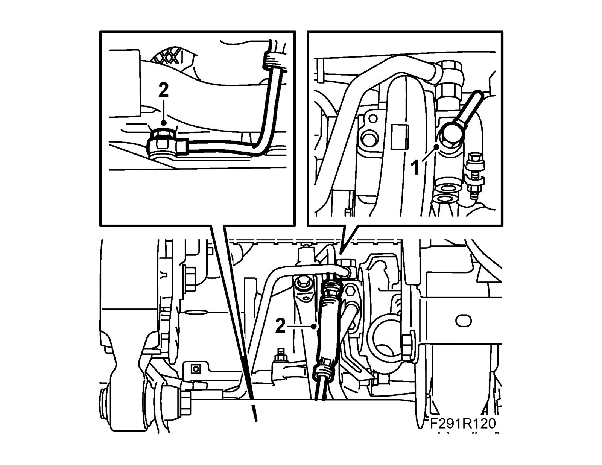

Oil Delivery Pipe, Turbo, B207
Oil delivery pipe, turbo, B207To remove
1. Protect the wings with covers.
2. Remove the catalytic converter, see Catalytic converter, Front, catalytic converter, US/CA
3. Remove the bolt to the oil delivery pipe from the turbocharger.

4. Raise the car. Remove the banjo screw from the engine block.
Remove the pipe and its gaskets from the connecting hole from the engine block.
To fit
Important
To reduce the risk of hoses mounted on the delivery side of the turbocharger coming loose due to low friction at high air pressure, the hoses and connecting pieces must be cleaned thoroughly before fitting. Use a rag dampened with 93 160 907 Motip Dupli cleaning agent to wipe clean inside the ends of the hoses. Clean the connecting pieces as well. If hose clips are rusty or damaged, they must be replaced so the correct clamping force is maintained.
1. Fit the upper section of the oil delivery pipe to the turbocharger with new gaskets and connect the pipe.
Tightening torque, oil delivery pipe to turbocharger 28 Nm (20 lbf ft)

2. Fit the lower section of the oil delivery pipe to the engine block. Replace the gaskets.
Tightening torque 28 Nm (20 lbf ft)
3. Fit the catalytic converter, see Catalytic converter, Front, catalytic converter, US/CA.
4. Remove the wing cover.